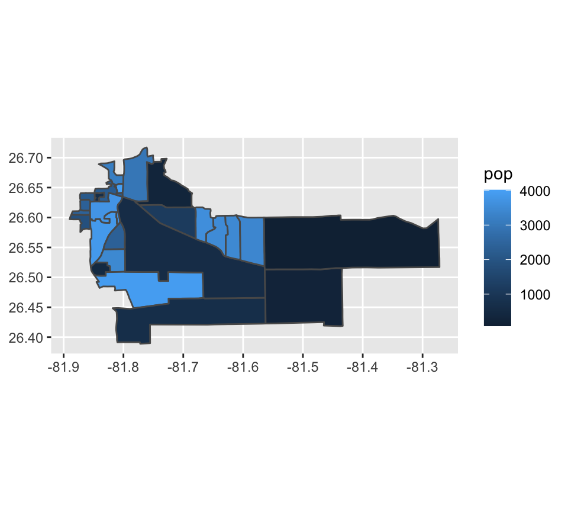
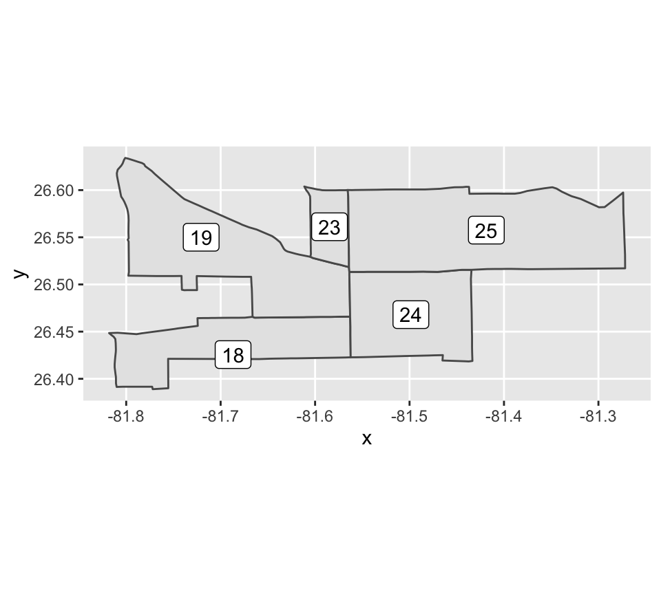
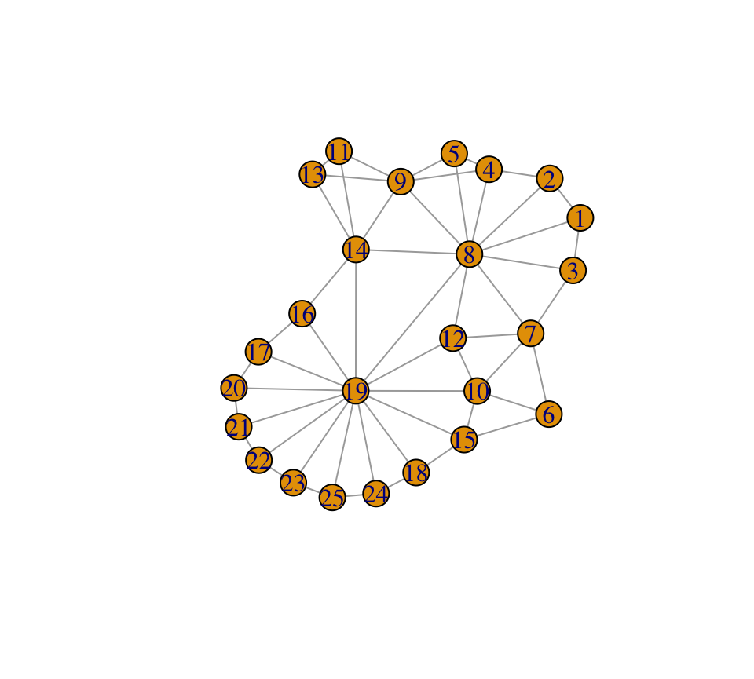
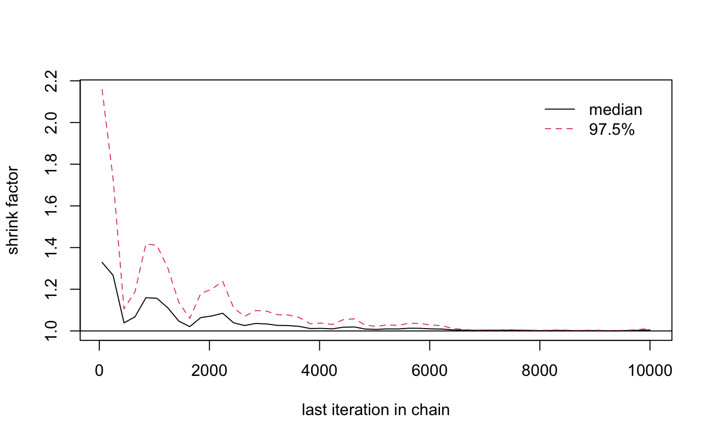

library(redist) library(tidyverse) #> ── Attaching packages ──────────────────────────────────────────────────────────────────────────────── tidyverse 1.3.0 ── #> ✓ ggplot2 3.3.1 ✓ purrr 0.3.4 #> ✓ tibble 3.0.1 ✓ dplyr 1.0.0 #> ✓ tidyr 1.1.0 ✓ stringr 1.4.0 #> ✓ readr 1.3.1 ✓ forcats 0.5.0 #> ── Conflicts ─────────────────────────────────────────────────────────────────────────────────── tidyverse_conflicts() ── #> x dplyr::filter() masks stats::filter() #> x dplyr::lag() masks stats::lag() library(igraph) #> #> Attaching package: 'igraph' #> The following objects are masked from 'package:dplyr': #> #> as_data_frame, groups, union #> The following objects are masked from 'package:purrr': #> #> compose, simplify #> The following object is masked from 'package:tidyr': #> #> crossing #> The following object is masked from 'package:tibble': #> #> as_data_frame #> The following objects are masked from 'package:stats': #> #> decompose, spectrum #> The following object is masked from 'package:base': #> #> union library(spdep) #> Loading required package: sp #> Loading required package: spData #> To access larger datasets in this package, install the spDataLarge #> package with: `install.packages('spDataLarge', #> repos='https://nowosad.github.io/drat/', type='source')` #> Loading required package: sf #> Linking to GEOS 3.7.2, GDAL 2.4.2, PROJ 5.2.0 library(coda) set.seed(1)
The redist package is designed to allow for replicable redistricting simulations. The package comes loaded with data for simple testing and with functions to simulate redistricting and to run diagnostics on the redistricting plans created. These data form the basis for small-scale validations of sampling methods in Automated Redistricting Simulation Using Markov Chain Monte Carlo. For larger scale validation, see The Essential Role of Empirical Validation in Legislative Redistricting Simulation, which has additional methods which will be added to this package later in 2020.
Loading redist
redist can be installed either from CRAN, for the stable version with:
install.packages('redist')
or from github, which is updated more often:
devtools::install_github(repo = 'kosukeimai/redist', ref = 'master')
Helpful Packages to be used with redist.
This package is often used with a set of other packages: sf and sp are useful for working with shapefiles and can be loaded with:
For additional functions for working with the shapefiles, using spdep is recommended. This is also used with creating lists of which precincts are adjacent to other precincts. It can be loaded with:
library(spdep)
For plotting maps and adjacency graphs, tidyverse and igraph are useful. Tidyverse allows for making ggplot maps, when used with sf. These may be loaded with:
Included Data
The package contains four datasets. The first three are algdat.p10, algdat.p20, and algdat.pfull which contain data for 25 continuous precincts within Florida when partitioned into three districts. Respectively, these are those plans which fall within 10% population parity, 20% population parity, and all possible partitions. These are loaded in with the package and can be loaded as follows:
Each algdat object is a list with five objects:
names(algdat.p10) #> [1] "adjlist" "cdmat" "precinct.data" #> [4] "segregation.index" "distancemat" names(algdat.p20) #> [1] "adjlist" "cdmat" "precinct.data" #> [4] "segregation.index" "distancemat" names(algdat.pfull) #> [1] "adjlist" "cdmat" "precinct.data" #> [4] "segregation.index" "distancemat"
adjlist - contains 25 adjacency lists as nb objects from package
spdepcdmat - contains all possible congressional districts under the population constraint for that object as a matrix
-
precinct.data - data frame with a row for each precinct with five columns: pop, demvote, repvote, blackpop, hispanicpop
- pop - the total population of the district
- demvote - the number of votes cast for Obama in the 2008 presidential election in that precinct
- repvote - the number of votes cast for John McCain in the 2008 presidental election in that precinct
- blackpop - the number of black individuals in that precinct
- hispanicpop - the number of hispanic individuals in that precinct
segregation.index - the dissimilarity index of segregation for each plan from Trends in the Residential Segregation of Blacks, Hispanics, and Asians: 1970-1980 (Massey & Denton 1987).
distancemat - a symmetric matrix with the squared distance between two precincts as its entries
The fourth data set is the sf dataframe, containing the shapes themselves for creating these objects. It can be called with:
fl25 <- readRDS('~/Documents/GitHub/redist/data/fl25.rda')#this will be swapped for data line once rebuilt #data(fl25)
From the head of the data, we can see this is a typical dataframe with a geometry column appended. See the website for sf for more information about this type of object.
head(fl25) #> Simple feature collection with 6 features and 11 fields #> geometry type: POLYGON #> dimension: XY #> bbox: xmin: -81.88992 ymin: 26.5024 xmax: -81.82192 ymax: 26.6418 #> CRS: NA #> geoid10 pop vap obama mccain TotPop BlackPop HispPop VAP BlackVAP #> 2493 1655 2429 1870 439 523 2429 56 1550 1870 1162 #> 2506 1679 2364 1662 505 300 2364 519 1488 1662 219 #> 2511 1728 1882 1510 389 473 1882 1058 1090 1510 740 #> 2516 1663 2139 1464 598 111 2139 719 960 1464 426 #> 2543 1671 673 221 348 18 673 358 1442 221 99 #> 2546 1805 501 146 192 454 501 77 1464 146 1233 #> HispVAP geometry #> 2493 1036 POLYGON ((-81.85582 26.6116... #> 2506 981 POLYGON ((-81.85532 26.6263... #> 2511 703 POLYGON ((-81.85572 26.6043... #> 2516 472 POLYGON ((-81.84802 26.6409... #> 2543 918 POLYGON ((-81.84002 26.6268... #> 2546 918 POLYGON ((-81.82192 26.5088...
Each column contains useful information for typical redistricting questions: * geoid10 is a unique identifier. * pop is the population of the precinct. * vap is the voter age population. * obama is the vote count for Obama in the 2012 presidential election. * mccain is the vote count for McCain in the 2012 presidential election. * TotPop is identical to pop. * BlackPop is the number of black residents within the precinct. * HispPop is the number of Hispanic residents within the precinct. * VAP is identical to vap. * BlackVAP is the number of voter age black residents within the precinct. * HispVAP is the number of voter age hispanic residents within the precinct. * geometry contains the sf geometry.
Adjaceny-Based Redistricting
We begin with a simple example of thinking about adjacency-based redistricting, using a small piece of Florida, named fl25. It can be loaded with the data command as follows. For more information on the data, see the data section
fl25 <- readRDS('~/Documents/GitHub/redist/data/fl25.rda')#this will be swapped for data line once rebuilt #data(fl25)
This Florida subset contains the shapefiles for the districts, which can be plotted with sf.
fl25 %>% ggplot(aes(fill = pop)) + geom_sf()

In this map, the color represents the population, where darker colors are smaller populations. The 25 shapes outlined above are the precincts that we work with. A difficulty in redistricting is that the area of the precinct does not necessarily tell us anything about the population of the precinct. As such, we work with adjacency lists for the precincts.
If we number the districts from 1 to 25, we say that two districts are connected if they share a side, which is referred to as rook contiguity.
If we arbitrarily number the districts from the plot above, we can pick a small subset of them.
fl25$id <- 1:25 fl25[c(18,19,23:25),] %>% ggplot() + geom_sf() + geom_sf_label(aes(label = id))

Then, the 25th precinct by this numbering is connected to 19, 23, and 24. So, the adjacency list would be 19,23,24. 18 would not be on this list, as it does not share a portion of a side with precinct 25.
To make an adjacency list, we may use the packages spdep with function poly2nb. We use this function with queen = FALSE, as we want the rooks adjacency, not the queens adjacency, which would allow for if only corners touch, like on a chess board.
adjlist <- poly2nb(pl = fl25, queen = FALSE)
We can further verify the above comments by looking at the 25th element of the adjacency list, which corresponds to the 25th district.
adjlist[[25]] #> [1] 19 23 24
Using igraph, we can easily plot the whole set of adjacencies:
plot(graph_from_adj_list(adjlist, mode = 'total'))

While these are numbered in 1:25, the backend in C++ requires 0 indexing for efficiency, so we sink the adjacency list to be 0:24.
for(i in 1:25){ adjlist[[i]] <- adjlist[[i]]-1 }
Thus, everything is the same up to naming.
adjlist[[25]] #> [1] 18 22 23
Each algorithm within the package maintains geographically contiguous districts. The MCMC and enumerate algorithms consider the underlying graphical structure of the districts, where contiguity is represented by the edges in the above graph.
Redistricting with MCMC
To begin running the MCMC algorithm, we have to provide some basic data. We provide the adjacency list to adjobj, a vector of populations to popvec, the number of districts as 3 to ndists, and choose to run 10000 simulations with nsims. We can also save the output with savename.
alg_mcmc <- redist.mcmc(adjobj = algdat.pfull$adjlist, popvec = algdat.pfull$precinct.data$pop, ndists = 3, nsims = 10000, savename = "redist.mcmc") #> #> ==================== #> redist.mcmc(): Automated Redistricting Simulation Using #> Markov Chain Monte Carlo #> #> Preprocessing data. #> #> #> ==================== #> Using redist.rsg() to generate starting values. #> #> 10 percent done. #> Metropolis acceptance ratio: 0.962963 #> #> 20 percent done. #> Metropolis acceptance ratio: 0.961981 #> #> 30 percent done. #> Metropolis acceptance ratio: 0.963988 #> #> 40 percent done. #> Metropolis acceptance ratio: 0.964491 #> #> 50 percent done. #> Metropolis acceptance ratio: 0.963993 #> #> 60 percent done. #> Metropolis acceptance ratio: 0.963827 #> #> 70 percent done. #> Metropolis acceptance ratio: 0.962852 #> #> 80 percent done. #> Metropolis acceptance ratio: 0.96137 #> #> 90 percent done. #> Metropolis acceptance ratio: 0.961551 #> #> 100 percent done. #> Metropolis acceptance ratio: 0.961496
Note that we do not need to specify ndists when we supply a different argument, initcds, which is the set of districts to initialize to. If we do not specific initcds, the RSG function is run to initialize districts. When tuning parameters, the initcds argument may be useful for ensuring diverse starting positions for different chains, though this is not typically necessary.
We can specify initcds, for example, as the first column of the full enumeration in algdat.pfull.
initcds <- algdat.pfull$cdmat[,1]
alg_mcmc <- redist.mcmc(adjobj = algdat.pfull$adjlist, popvec = algdat.pfull$precinct.data$pop, initcds = initcds, nsims = 10000, savename = "redist.mcmc") #> #> ==================== #> redist.mcmc(): Automated Redistricting Simulation Using #> Markov Chain Monte Carlo #> #> Preprocessing data. #> #> 10 percent done. #> Metropolis acceptance ratio: 0.956957 #> #> 20 percent done. #> Metropolis acceptance ratio: 0.961981 #> #> 30 percent done. #> Metropolis acceptance ratio: 0.961654 #> #> 40 percent done. #> Metropolis acceptance ratio: 0.95999 #> #> 50 percent done. #> Metropolis acceptance ratio: 0.958792 #> #> 60 percent done. #> Metropolis acceptance ratio: 0.959493 #> #> 70 percent done. #> Metropolis acceptance ratio: 0.960423 #> #> 80 percent done. #> Metropolis acceptance ratio: 0.960495 #> #> 90 percent done. #> Metropolis acceptance ratio: 0.959329 #> #> 100 percent done. #> Metropolis acceptance ratio: 0.959696
Once we’ve run the algorithm, the output is of class redist. As savename was provided, there is an Rdata file created in the working directory with a copy of the output.
class(alg_mcmc) #> [1] "redist" names(alg_mcmc) #> [1] "partitions" "distance_parity" "distance_original" #> [4] "mhdecisions" "mhprob" "pparam" #> [7] "beta_sequence" "energy_psi" "constraint_pop" #> [10] "constraint_compact" "constraint_segregation" "constraint_similar" #> [13] "constraint_countysplit" "boundary_partitions" "boundaryratio"
For simple runs of the algorithm, the most important pieces of the output are partitions and distance_parity. The partitions object is a matrix with ndist rows and nsims columns. Each column is one districting plan, where the numbers go from 0 to n-1, with each number represents the district assignment.
alg_mcmc$partitions[,1] #> [1] 0 1 2 2 0 2 2 2 2 2 2 2 2 2 2 2 2 2 2 2 2 2 2 2 2
The distance_parity output provides the population parity of the districts as an array with nsims entries.
alg_mcmc$distance_parity[1] #> [1] 1.506853
The additional outputs are useful for implementing the algorithm with constraints.
Redistricting with MCMC using MPI
The running of this function is the same as in redist.mcmc, but it requires Rmpi installed.
library(Rmpi) redist.mcmc.mpi(adjobj = algdat.pfull$adjlist, popvec = algdat.pfull$precinct.data$pop, nsims = 10000, ndists = 3, savename = "redist.mcmc.mpi")
Outputs and usage are the same as in the MCMC Section, but MPI will allow for much faster computation.
Using Multiple Chains
When running larger redistricting analyses, one important step is to run multiple chains of the MCMC algorithm. This will also allow us to diagnose convergence better, using the Gelman-Rubin plot, as seen in the section on Diagnostic Plots.
On Windows and in smaller capacities, it is useful to run the algorithm within an lapply loop. First, we set up the seed for replicability and decide on the number of chains and simulations.
mcmc_chains <- lapply(1:nchains, function(x){ redist.mcmc(adjobj = algdat.pfull$adjlist, popvec = algdat.pfull$precinct.data$pop, nsims = nsims, ndists = 3) }) #> #> ==================== #> redist.mcmc(): Automated Redistricting Simulation Using #> Markov Chain Monte Carlo #> #> Preprocessing data. #> #> #> ==================== #> Using redist.rsg() to generate starting values. #> #> 10 percent done. #> Metropolis acceptance ratio: 0.958959 #> #> 20 percent done. #> Metropolis acceptance ratio: 0.964982 #> #> 30 percent done. #> Metropolis acceptance ratio: 0.960987 #> #> 40 percent done. #> Metropolis acceptance ratio: 0.96074 #> #> 50 percent done. #> Metropolis acceptance ratio: 0.962993 #> #> 60 percent done. #> Metropolis acceptance ratio: 0.962327 #> #> 70 percent done. #> Metropolis acceptance ratio: 0.961995 #> #> 80 percent done. #> Metropolis acceptance ratio: 0.96187 #> #> 90 percent done. #> Metropolis acceptance ratio: 0.961329 #> #> 100 percent done. #> Metropolis acceptance ratio: 0.961096 #> #> #> ==================== #> redist.mcmc(): Automated Redistricting Simulation Using #> Markov Chain Monte Carlo #> #> Preprocessing data. #> #> #> ==================== #> Using redist.rsg() to generate starting values. #> #> 10 percent done. #> Metropolis acceptance ratio: 0.968969 #> #> 20 percent done. #> Metropolis acceptance ratio: 0.966983 #> #> 30 percent done. #> Metropolis acceptance ratio: 0.966656 #> #> 40 percent done. #> Metropolis acceptance ratio: 0.967992 #> #> 50 percent done. #> Metropolis acceptance ratio: 0.963593 #> #> 60 percent done. #> Metropolis acceptance ratio: 0.963827 #> #> 70 percent done. #> Metropolis acceptance ratio: 0.96328 #> #> 80 percent done. #> Metropolis acceptance ratio: 0.96362 #> #> 90 percent done. #> Metropolis acceptance ratio: 0.963996 #> #> 100 percent done. #> Metropolis acceptance ratio: 0.963296 #> #> #> ==================== #> redist.mcmc(): Automated Redistricting Simulation Using #> Markov Chain Monte Carlo #> #> Preprocessing data. #> #> #> ==================== #> Using redist.rsg() to generate starting values. #> #> 10 percent done. #> Metropolis acceptance ratio: 0.968969 #> #> 20 percent done. #> Metropolis acceptance ratio: 0.966983 #> #> 30 percent done. #> Metropolis acceptance ratio: 0.962988 #> #> 40 percent done. #> Metropolis acceptance ratio: 0.96149 #> #> 50 percent done. #> Metropolis acceptance ratio: 0.963393 #> #> 60 percent done. #> Metropolis acceptance ratio: 0.964161 #> #> 70 percent done. #> Metropolis acceptance ratio: 0.962423 #> #> 80 percent done. #> Metropolis acceptance ratio: 0.962495 #> #> 90 percent done. #> Metropolis acceptance ratio: 0.963107 #> #> 100 percent done. #> Metropolis acceptance ratio: 0.963096 #> #> #> ==================== #> redist.mcmc(): Automated Redistricting Simulation Using #> Markov Chain Monte Carlo #> #> Preprocessing data. #> #> #> ==================== #> Using redist.rsg() to generate starting values. #> #> 10 percent done. #> Metropolis acceptance ratio: 0.967968 #> #> 20 percent done. #> Metropolis acceptance ratio: 0.962481 #> #> 30 percent done. #> Metropolis acceptance ratio: 0.962654 #> #> 40 percent done. #> Metropolis acceptance ratio: 0.964491 #> #> 50 percent done. #> Metropolis acceptance ratio: 0.961592 #> #> 60 percent done. #> Metropolis acceptance ratio: 0.960993 #> #> 70 percent done. #> Metropolis acceptance ratio: 0.960709 #> #> 80 percent done. #> Metropolis acceptance ratio: 0.960245 #> #> 90 percent done. #> Metropolis acceptance ratio: 0.960218 #> #> 100 percent done. #> Metropolis acceptance ratio: 0.960396
In unix-based systems, this can be run considerably faster by running this in parallel.
mcmc_chains <- parallel::mclapply(1:nchains, function(x){ redist.mcmc(adjobj = algdat.pfull$adjlist, popvec = algdat.pfull$precinct.data$pop, nsims = nsims, ndists = 3) }, mc.set.seed = 1, mc.cores = parallel::detectCores())
Random Seed Growth
This package also contains an implementation of Chen and Rodden’s non-compact Random Seed and Grow districting algorithm from their paper Unintentional Gerrymandering: Political Geography and Electoral Biases in Legislatures.
The adjacency list, via adj.list, is created as in Adjacency-Based Redistricting, population is the population of the districts, ndists is the number of districts, and thresh is the allowed population parity. A thresh of 0.05 allows for 5% population parity. In easier redistricting questions, a small maxiter is typically sufficient, but in large maps, values may be closer to 50,000 to ensure that a solution is found.
rsg <- redist.rsg(adj.list = algdat.pfull$adjlist, population = algdat.pfull$precinct.data$pop, ndists = 3, thresh = 0.05, maxiter = 5000) #> #> ==================== #> redist.rsg(): Automated Redistricting Starts #> #> #> 3 districts built using 25 precincts in 0 seconds...
The output of redist.rsg is a list with three objects. district_membership provides a numeric array with indices for which district each precinct belongs to.
rsg$district_membership #> [1] 1 2 2 1 0 2 0 0 2 1 1 1 1 1 1 2 0 2 0 0 2 0 2 0 0
district_list will provide an alternate formulation of this with ndists arrays, indicating which precincts are in each district.
rsg$district_list #> [[1]] #> [1] 4 6 18 19 21 23 24 7 16 #> #> [[2]] #> [1] 14 12 13 11 10 9 0 3 #> #> [[3]] #> [1] 22 2 20 17 5 15 1 8
Corresponding to this, district_pop will give the district population for each of the ndists districts.
rsg$district_pop #> [1] 59125 59294 56624
Segregation Index
To evaluate districting plans, the redist package comes with the redist.segcalc function. This computes the segregation index introduced in Massey and Denton 1987.
It takes three arguments, algout, which is a redist object from the various mcmc function or rsg function, grouppop which is the population of the group being used for comparison, and fullpop is the total population of the precinct.
seg <- redist.segcalc(algout = alg_mcmc, grouppop = algdat.pfull$precinct.data$blackpop, fullpop = algdat.pfull$precinct.data$pop)
This returns a numeric vector with the an entry for each district provided.
Diagnostic Plots
source('~/Documents/GitHub/redist/R/diagplot.R')
When using the MCMC algorithms, there are various useful diagnostic plots. The redist.diagplot function creates familiar plots by converting numeric entries into mcmc objects to use with coda.
The first four plots take a single index, such as one created by redist.segcalc. * Trace Plot
redist.diagplot(seg, plot = "trace")

- Autocorrelation Plot
redist.diagplot(seg, plot = "autocorr")
- Density Plot
redist.diagplot(seg, plot = "densplot")
- Mean Plot
redist.diagplot(seg, plot = "mean")
The final plot requires at least two chains.
seg_chains <- lapply(1:nchains, function(i){redist.segcalc(algout = mcmc_chains[[i]], grouppop = algdat.pfull$precinct.data$blackpop, fullpop = algdat.pfull$precinct.data$pop)}) redist.diagplot(seg_chains, plot = 'gelmanrubin')
 Beware that this diagnostic will often fail to converge if there are insufficient iterations. If an error is thrown and no plot is created, try increasing nsims.